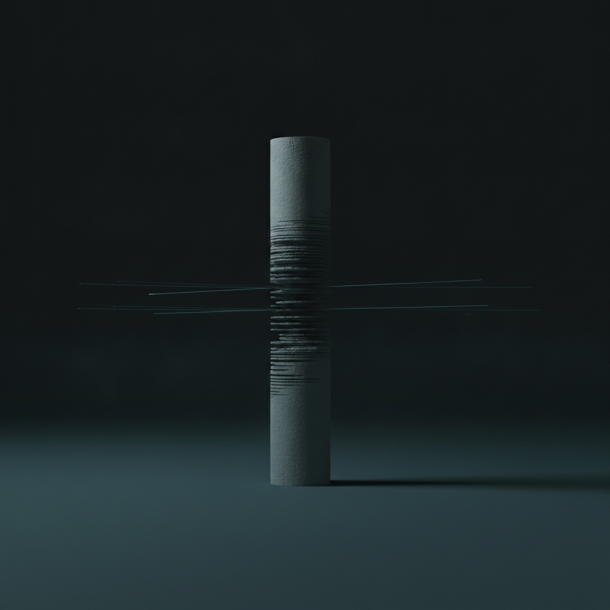

Drafted: 2026-06-17
OS Pillar: Operating Model OS
Quarterly Theme: The Machine
Subject: Why your team still asks
Preheader: Delegation moves tasks. What this issue names moves identity.
Insight summary: The business that runs because the owner is brilliant in every decision will fail when that brilliance is required to scale — the machine breaks when the operator is irreplaceable.
This week: the bottleneck in every story is the founder who has not decided to stop being the answer.
The most common reason a twenty-million-dollar business stays at twenty million is that the founder still wants to be the one who knows. Not the one who decides. The one who knows. This week's coverage of family business succession, family office onboarding, and a chief executive's confession that letting go is harder than taking hold all point at the same thing from different angles. The bottleneck is not capability. It is identity. The team is waiting because the founder has not yet decided to stop being needed in that particular way. Everything downstream of that decision is theatre until the decision is made.
Your team still asks. You have built the dashboards. You have written the procedures. You have said the words out loud in three different meetings. And every Monday, the same questions land on your desk in slightly different wrappers.
The instinct is to add more system. A clearer dashboard. A better procedure document. A new accountability framework that will, this time, finally release you from the loop.
It will not work. Not because the system is wrong. Because the system was never the bottleneck.
Most advisors call this a delegation problem and prescribe better tooling. It is not a delegation problem. Delegation moves tasks. What you are looking at is something older and stickier. Your team is asking because you have not yet decided, at the level beneath conscious choice, to stop being the one who knows. The question lands on your desk because part of you still wants it to.
This is the architecture problem hiding inside the operating model. The Operating Model OS rests on a class of artifact you may know as The Decision Rule: a written trigger, a test the team applies, and a boundary that defines when the decision returns to you. Three components. Roughly an index card. The artifact converts what lives in your head into something the team can run without you.
The Decision Rule is the tool. The tool is not the work. The work is the prior question: do you actually want this decision to leave your desk?
Most founders cannot answer that honestly the first time. The business was built on being the one who could feel when the call was right. That instinct earned the company every dollar it now has. Releasing it does not feel like progress. It feels like loss. And the system, however well designed, will not override an unresolved no.
This is the moment most transformation work stalls. Not at the dashboard. Not at the org chart. At the founder's quiet, unstated preference to remain necessary in the way they have always been necessary. The team senses it. They escalate because escalation is the rational response to a system that says you decide while the human in the room says, with a thousand small signals, bring it to me first.
This week, do not write a Decision Rule yet. Pick one decision type that keeps returning to you. Sit with the question for ten minutes: do I actually want this off my desk. If the answer is yes, write the rule on Friday. If the answer is no, name what part of you still wants to be asked. The system follows the willingness. Never the other way around.
The Anthropic shutdown showed what single-source dependency looks like when the source is removed. Per HR Executive, Amazon CEO Andy Jassy raised security concerns with Treasury Secretary Scott Bessent about prompts extracting sensitive information from Anthropic's Fable 5 model. Within 48 hours, the administration signed a directive cutting global access. Anthropic complied. Foreign-born researchers who had built the models were locked out of their own work.
The operational lesson sits one layer below the headline. Every business has its Anthropic. A vendor, a relationship, a key person whose presence the operating model quietly assumes. When that source is removed by force or by choice, the system designed around it does not adapt. It stops.
For US owners running $5M to $100M businesses, the audit is direct. Name the three single points of failure in your operating model. Write the decision rule that runs without each one. A model that depends on a single source is not a model. It is a hope.
The Decision Rule, written on an index card - A three-line artifact: the trigger that activates the rule, the test the team applies to decide, and the boundary that defines when the decision returns to you. It converts what lives in your head into something a manager can run without you. Where to find it: write it Friday on actual paper, then share Monday with the role that owns the decision.
Watch for this week: the decisions that land in your inbox or WhatsApp between Tuesday and Friday. Not the volume. The type. Sort them into two piles: decisions that genuinely required you, and decisions that arrived because nobody knew you had given them away. The second pile is your operating model's actual interface with your team. It is also the first draft of next week's Decision Rules.
If something in this issue landed, reply - I read every response.
If this is useful to someone in your network, forward it - it takes ten seconds and it's the highest compliment.
When you're ready to work together directly, here is how we start: [link]
Draft generated by the pipeline. Review and edit before sending.